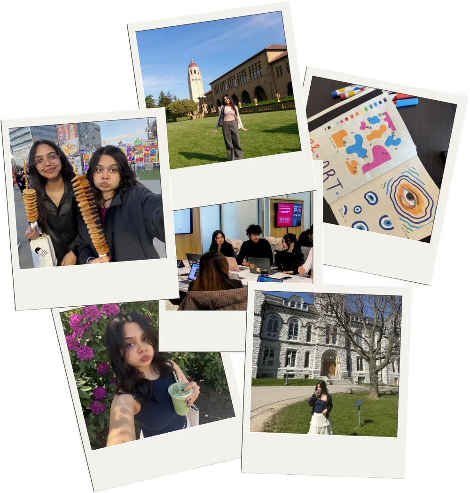
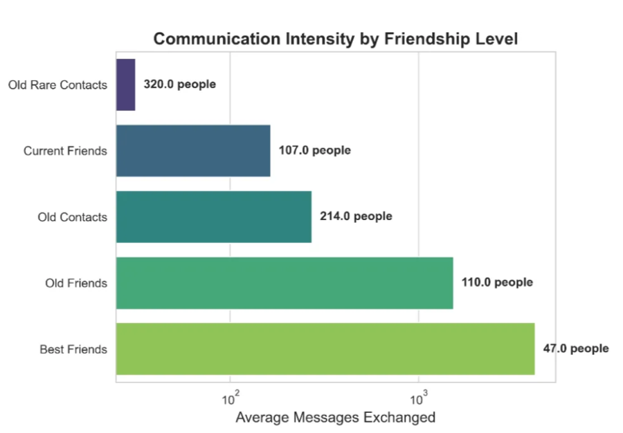

ananya singh
hi everyone! i’m an undergrad
studying computer science
and artificial intelligence.

open to collaborators, internships, and research roles!
email
linkedin
github
currently up to...
-
exploring ai welfare research! we’re building
increasingly complex systems that may or may not warrant moral
consideration someday. i’m excited to dive into these
questions.
-
studying model preferences, especially towards rude users, by
analyzing llm bail behaviour as a research assistant at
padcomp lab!
recently...
-
participated in apart research’s digital minds sprint!
view submission →
-
engaged in 8 weeks of discussions around x-risk, ai
consciousness, what a better future looks like and more at nous
ai safety x philosophy reading group!
experience
-
may 2026 – present
research assistant ·
padcomp lab
studying model preferences, especially towards rude users, by analyzing llm bail behaviour
-
jan 2026 – present
tech & ops intern ·
bmo financial group
leading ai-native process improvements and supporting senior pms
-
sep 2024 – apr 2025
junior full-stack developer co-op ·
operto guest technologies
my first swe role where i built automations, fixed bugs, and shipped ui tools for the customer success team
leadership & volunteering
-
may 2025 – present
president ·
sfu blueprint
building pro bono tech for nonprofits and leading a 50+ person org
-
present
host ·
treehouse (sfu’s socratica node)
hosting weekly socratica co-working sessions for like-minded builders and creatives to find their third place
-
may 2025 – dec 2025
vp finance ·
sfu residence hall association
managed a $60,000 budget and hosted residence events
← back to projects
machine learning my friendships
The Big Question
I have had my current Instagram account for over 8 years. For the
major chunk of this time, I lived in India’s busiest and
most social city, Mumbai, where the teen culture is
such that Instagram becomes the main mode of socializing. For
Mumbai teens, Instagram direct messages (DMs) are the western
equivalent of text messages. Consequently, I accumulated a large
library of DMs over the years, full of conversations and comments
from people I met at every stage of my early life. Surely this
rich dataset could tell us an interesting story with the right
amount of data science. Hence, the question:
Can machine learning discover meaningful friendship patterns
hidden in 8 years of digital conversations, and do these patterns
match how we actually think about our relationships?
Data at a glance
- 453,782 raw messages after cleaning
- 1186 users after entity resolution
- oldest to latest message: 2017-04-12 to 2025-07-16
Data Collection
Instagram allows data export via mobile app. After multiple
attempts due to 4-day expiration limits and occasional incomplete
downloads, I successfully obtained 8 years of message data.
Data Cleaning
I spent most of my time getting the data into a useful shape. The
raw Instagram export contained over 540,000 messages across 1,200+
conversations, but required extensive preprocessing before
analysis. Each conversation was stored as a separate folder
containing multiple JSON files (message_1.json, message_2.json,
etc.). Each file contained message metadata including sender
names, timestamps, content, and call duration.
Major cleaning challenges
-
Filtering Conversations: I needed to
distinguish between individual conversations and group chats.
Using the “participants” field in each JSON file, I
excluded any conversation with more than 2 participants to focus
solely on one-on-one relationships.
-
System Message Removal: A significant
portion of messages were system-generated notifications like
“You started a video call,” or “Reacted
♥ to your message.” I used regex patterns to
identify and remove these automated messages, keeping only real
communication.
-
Data Standardization: Messages had
inconsistent formats and some encoding issues. I converted all
timestamps to datetime objects and since my analysis focused on
communication patterns rather than content, I left encoding
issues unresolved: I only needed message counts, timing,
and metadata.
-
Entity Resolution: Many people had
multiple Instagram accounts over the years, appearing as
separate users in my data. I created a manual mapping system to
merge conversations from the same person, combining their
message counts and recalculating conversation timelines.
Feature Engineering
For each conversation, I calculated key friendship indicators:
total messages exchanged, message frequency, conversation span,
recency scores using exponential decay, communication balance
ratios, and call duration totals. However, I ended up using only a
few of these features based on how the clusters were forming.
Machine Learning Process (for the technical)
Why KMeans Clustering?
It was the intuitive choice to go with clustering since my data
was unlabeled. K-means groups similar observations together, which
fits the goal of finding friendship patterns. Since I expected a
reasonable number of distinct friendship types (around 4-6),
K-means with n_clusters=5 was appropriate.
Key preprocessing decisions
-
Log transformation of message counts:
message counts were heavily right-skewed, with most
conversations having few messages but some extreme outliers
reaching thousands. The log transformation normalized this
distribution.
-
Filtering threshold (>10 messages):
conversations with very few messages represented brief
encounters rather than meaningful relationships.
-
Feature selection: three key features
captured different aspects of friendship: log_messages,
recency_score, and conversation_span_days. To weight current
communication patterns more heavily, I included recency_score
three times in the feature list.
Cluster Discovery
I tried 4, 5, and 6 clusters: 5 gave the best balance
without being too granular or losing important distinctions. When
I looked at who ended up in each cluster, I could immediately tell
what each group represented. The algorithm basically reads my mind
about how I categorize my relationships.
Results (for the less technical)
My honest description of each group:
-
Best Friends: My closest friends I have
made over the years. Total messages are high, and conversation
spans are long.
-
Current Friends: High recency ratios, and
this cluster is full of people I met after coming to SFU.
-
Old Friends: High message volume but low
recency. The “we don’t talk anymore like we used to
do” cluster.
-
Old Contacts: Low recency and low
message volume. The “out of sight, out of mind”
people.
-
Old Rare Contacts: Highest per day
messages but everything else is the lowest. People I spoke to
once or twice for very specific reasons.
Plot 1: Distribution of Friendship Levels. 320 people are
“Old Rare Contacts”: basically everyone you
meet but don’t really connect with. Only 47 made it to
“Best Friends.”
Plot 2: Friendship Patterns. Best Friends sit alone in the
top-right corner with high messages AND high recency. Old
Friends vs Current Friends: similar message counts, totally
different recency.
Plot 3: Friendship Timeline. Most 6-8 year relationships
have flatlined, while my SFU friends cluster in the 0-2 year range
with high activity. Geographic moves = friendship resets.

Plot 4: Communication Intensity. Best Friends dominate with
4,000+ messages, but Old Friends (1,538) beat Current Friends
(165): accumulated history counts.
Plot 5: Friendship Characteristics Heatmap. Best Friends
dominate every single metric. But Old Contacts have the highest
messages per day rate: the “intense but brief”
pattern. Recent doesn’t always mean deep.
Limitations
Entity resolution wasn’t exhaustive, so duplicates likely
remain. I focused only on 1-on-1 conversations, missing group chat
dynamics. The recency score weighting was subjective rather than
optimized, and I had no external validation of friendship
strength. Limiting to Instagram misses other communication
channels like WhatsApp or calls.
Beyond Numbers
My biggest revelation? Recency bias is incredibly real. Despite
having years of message history, recency_score became my most
important feature, even more than total_messages or
conversation_span_days.
Why? Because psychologically, I feel closer to someone I texted
yesterday than someone I exchanged thousands of messages with two
years ago. Our brains prioritize recent interactions over
accumulated history.
This insight could have real applications. Instagram could use
similar clustering to suggest “people you might want to
reconnect with” by identifying Old Friends with high
historical engagement but low recent activity.